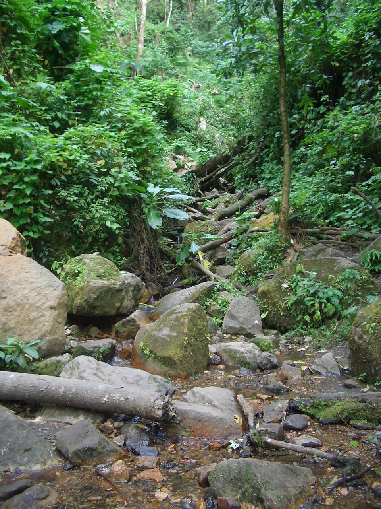
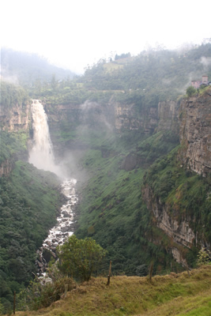
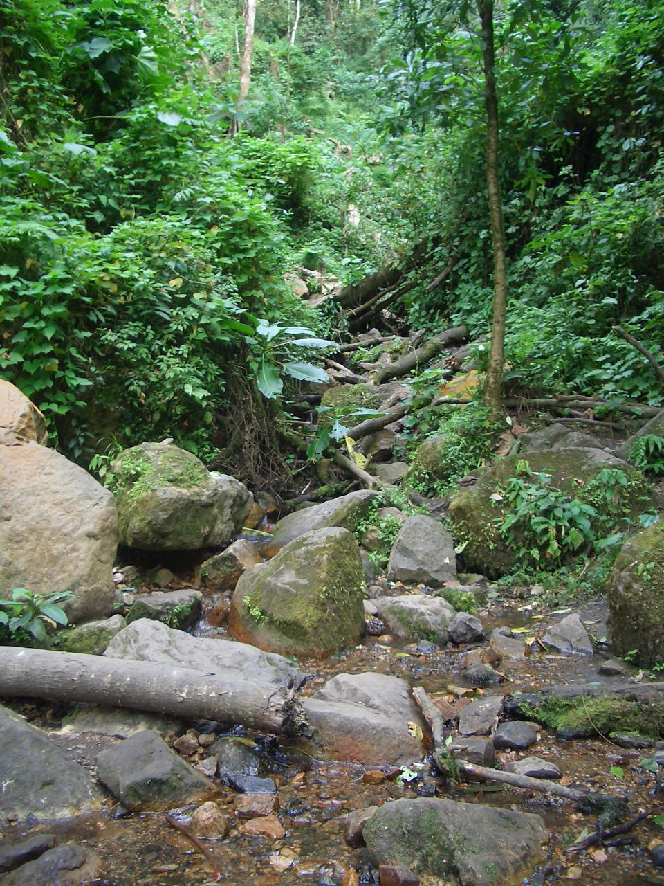
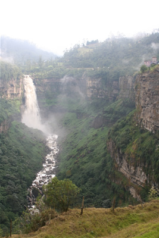

LOCALIZACION GEOGRAFICA
Soacha es un municipio de Cundinamarca (Colombia), ubicado en la Provincia de Soacha, de la cual hace parte también el Municipio de Sibaté. Limita con la ciudad de Bogotá, capital del país. Hace parte del Area Metropolitana de Bogotá según el censo DANE 2005, aunque es independiente politica y administrativamente. Actualmente es una de los centros urbanos más pobladas del país y un importante centro industrial para la Capital de la república y el país.

| NUMERO | ****** NOMBRE ***** |
|
1
2 3 4 5 6 7 8 9 10 11 12 13 14 15 16 17 18 19 20 |
Soacha Parque
Soacha Compartir San Mateo El Mirador El Bosque El Nogal Los Olivos Los Olivares La María Ricaurte San Carlos San Humberto Llano Oriental Chusaca El Palmar Nueva Granada Camilo Torres Portalegre Corregimiento de El Muña Municipio de Sibate |
Tabla No. 1: Lista de Municipios
LIMITES
Norte: Con los municipios de San Antonio de Tequendama del Departamento de Cundinamarca y las localidades de Ciudad Kennedy, Fontibón, Bosa y Ciudad Bolívar del Distrito Capital
Sur: Con los municipios de Sibaté y Silvania del Departamento de Cundinamarca
Este: Con la localidad de Bosa del Distrito Capital
Oeste: Con el Salto de Tequendama y los municipios de Viota y Mesitas del Colegio del Departamento de Cundinamarca
SITIOS DE INTERES
Como principales lugares de Interés en Soacha podemos encontrar el centro comercial Unisur (y las salas de cine y el parque de atracciones que allí se encuentran), el Estadio Luis Carlos Galán Sarmiento con capacidad para 10.000 personas y la Villa Deportiva, ambos remodelados recientemente, también la Plaza y el Parque Principal que conservan su ambiente de pueblo, la casa de la Cultura, las haciendas y zonas verdes que aun se conservan en su pequeña parte rural, las impresionantes formaciones rocosas que se encuentran a las afueras de Soacha, también cuenta con zonas de bares y discotecas y por supuesto el histórico Salto de Tequendama con sus espectaculares 157 m de cataratas, todavía sigue siendo reconocido como parte turística del municipio, aunque la contaminación del río Bogotá ha ido mermando su interés. El Zoológico Santa Cruz, aunque se encuentra en jurisdicción de Sibate, también es otro atractivo que se puede visitar en la zona.
A tan solo 30 minutos de Bogotá y 10 minutos de Soacha se encuentra el Parque Natural Chicaque, reserva natural de 300 ha adscrita a la Unidad Administrativa Especial del Sistema de Parques Naturales Nacionales del Ministerio del Medio Ambiente. Hoy por hoy y luego de 13 años de funcionamiento son líderes a nivel nacional en aspectos tales como: Ecoturismo, conservación, educación medio ambiental y todo tipo de actividades de recreación.
 



|
"Sitios de Interes Soacha y sus alrededores"
Chicaque es una selva alta andina con alturas que oscilan entre los 2.100 y 2.720 msnm, con temperaturas que van desde los 11°C a los 17°C. Como consecuencia de las corrientes de aire húmedo ascendentes del valle del Magdalena, se forman grandes bancos de neblina que catalogan este ecosistema como bosque de niebla.
Allí se puede encontrar un incomparable paisaje, un sinnúmero de especies vegetales representativas del bosque de niebla, más de 200 especies de aves, además de liebres, osos perezosos, micos, gatos de monte, 7 tipos de bosque con más de 15 km de senderos ecológicos, quebradas de aguas cristalinas y una completa infraestructura que incluye hotel, cabañas, zonas de camping y restaurante.

|

|